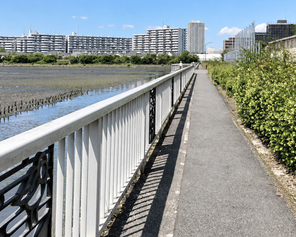
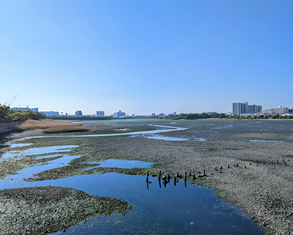
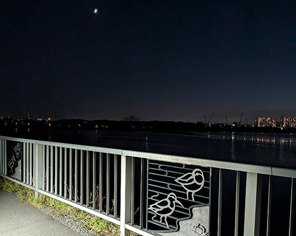
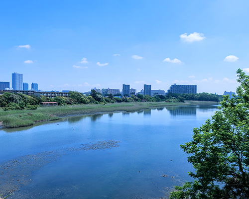
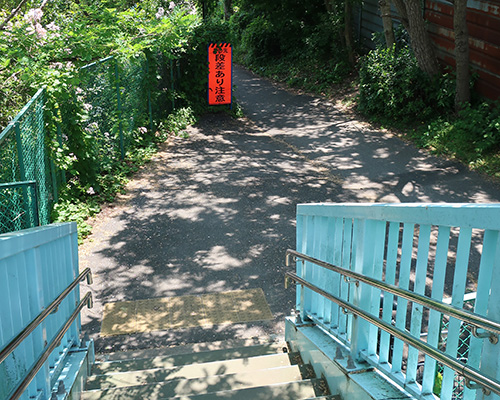

谷津干潟を一周すると何分？
谷津干潟の遊歩道は一周約3.5km。歩くなら約60分、景色や野鳥を観察しながらなら約90分を目安にすると、散策の予定を立てやすくなります。
一周コースと散策マップ
初めてなら、南側の観察センター付近を出発して、干潟の周囲を時計回りに歩くコースがおすすめです。主に北側と東側の遊歩道に観察デッキがあり、休憩することができます。

- 観察センター付近から出発。南側の遊歩道を西へ進みます。
- 西側を回って北側へ。景色の変化を楽しみながら、干潟の外周に沿って歩きます。
- 北側の遊歩道を東へ。対岸とは違う角度から、干潟を眺めてみましょう。
- 東側を通って南側へ。観察センター付近に戻ると一周です。
おすすめ観察ポイント
1. 東側の道路沿い



干潟を広く見渡せる観察ポイントです。潮の満ち引きや鳥のいる場所によっては、野鳥を近くで観察できることもあります。
道幅が狭いため、立ち止まる際や三脚を使う際は、通行する人の妨げにならないようにしましょう。
2. 西側の高台からの眺め


階段を上がった先から、干潟と周囲の街並みを見渡せます。水辺とは違った高さから、干潟の広がりを楽しめる場所です。
谷津バラ園も楽しむ
谷津駅から訪れるなら、商店街や谷津バラ園への立ち寄りも。春と秋のバラの観賞と、干潟の散策を組み合わせて楽しめます。